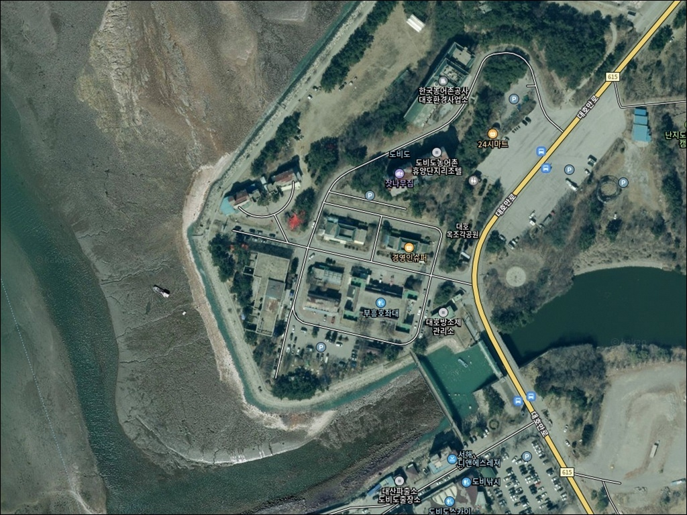
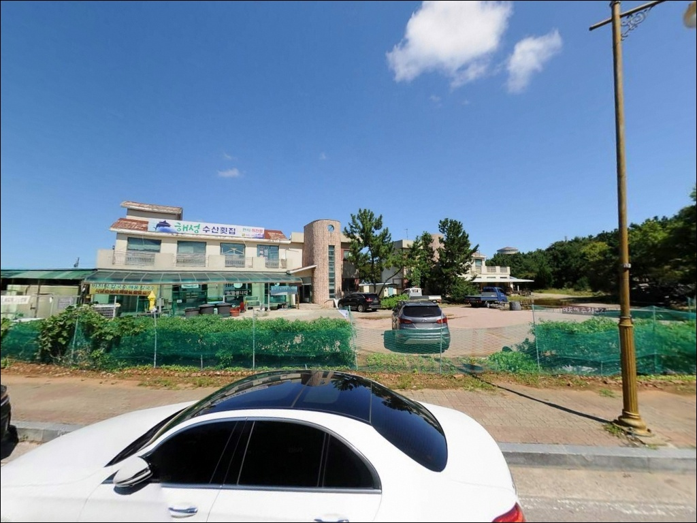
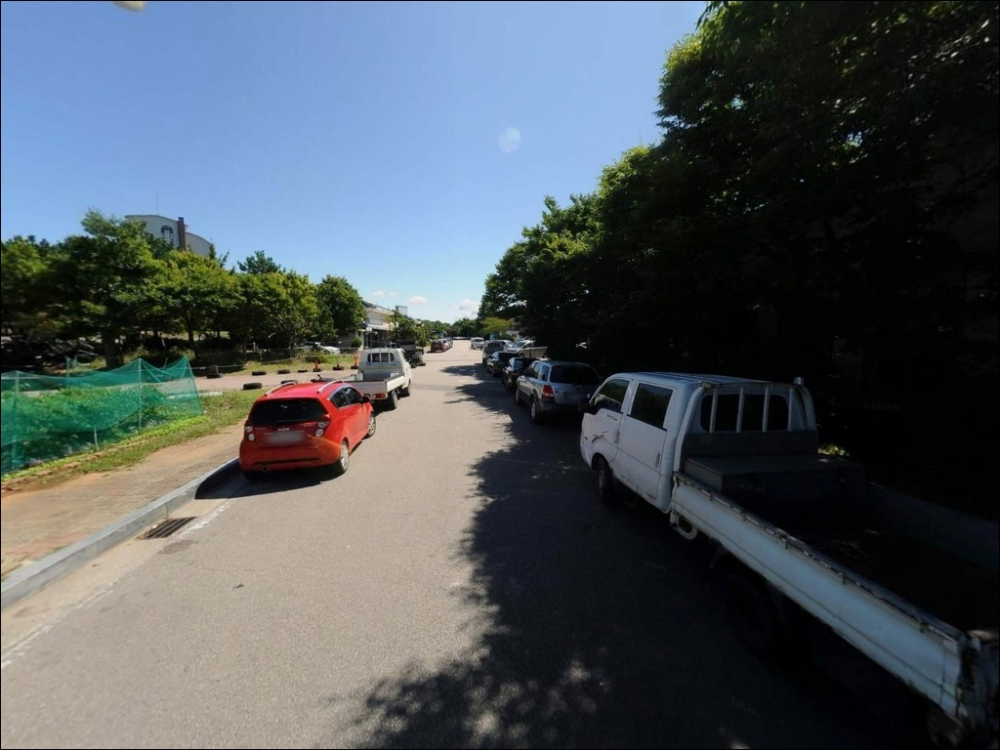
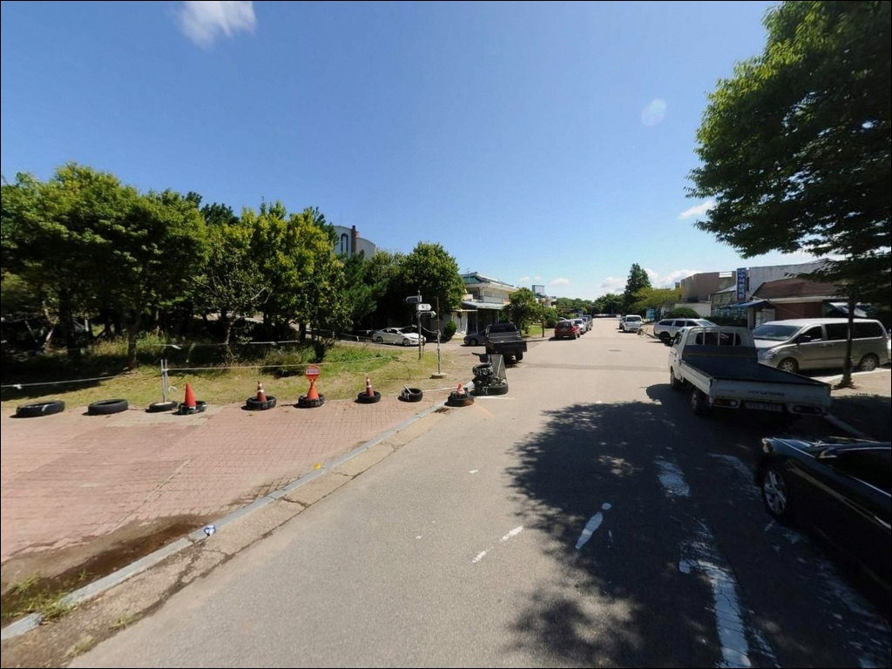
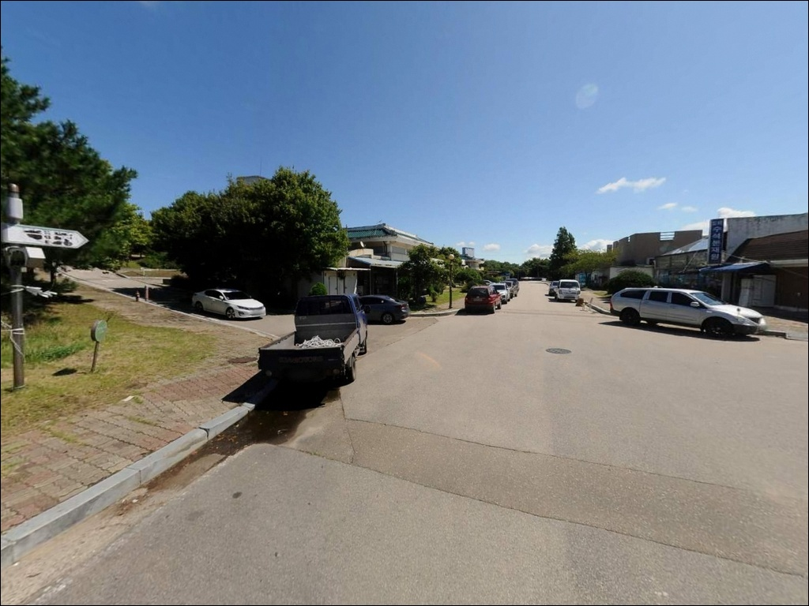
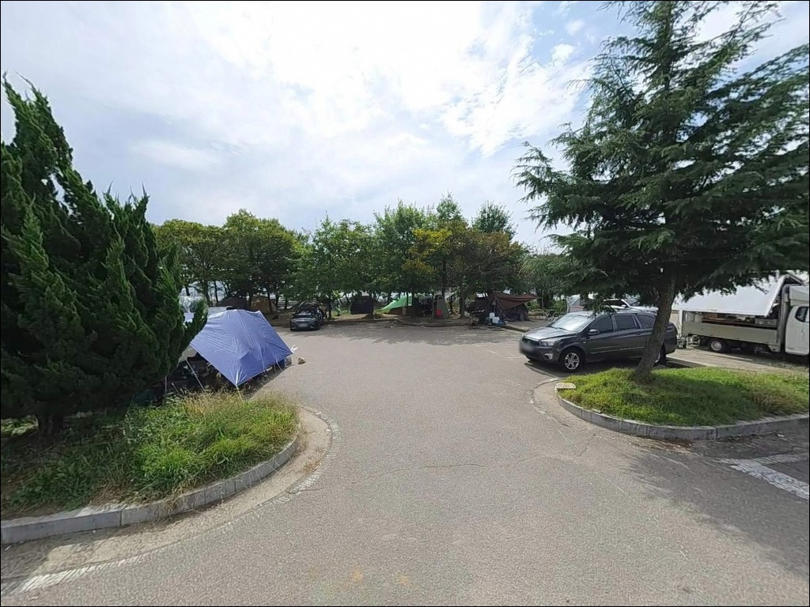
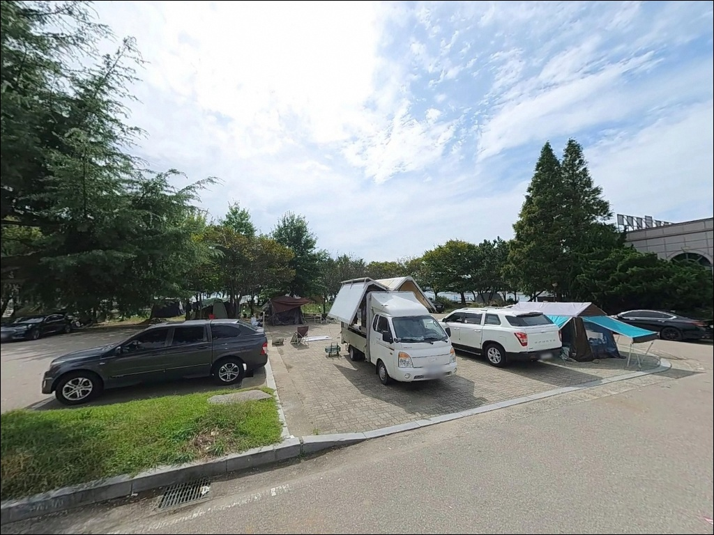
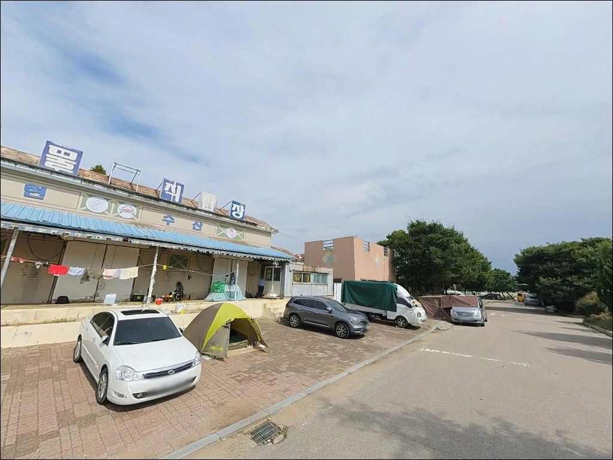
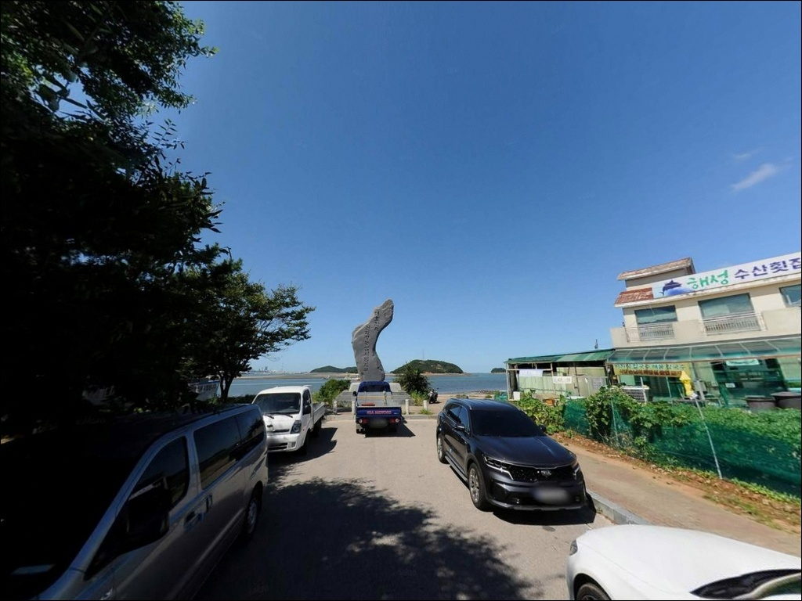

이 페이지에는 광고(제휴 링크 포함)가 있으며, 광고 링크를 통해 구매하면 운영자가 판매 수익 또는 수수료를 받을 수 있습니다. 포인트 사진: 카카오맵 스카이뷰·로드뷰. 이 페이지의 지도·사진 이미지는 카카오맵의 실제 서비스 이미지와 다를 수 있습니다.


도비도농어촌휴양지 주차장6, 충남 당진시 바다의 여운이 오래 남는 차박, 낚시 감성 포인트
포인트 안내
도비도농어촌휴양지 주차장6
충남 당진시 석문면 난지도리 536
도비도 낚시에서 가장 자주 틀리는 판단은
물때 확인 없이 진입해
수심이 충분할 거라고 전제하는 것입니다.
서해 조차가 큰 내만형 구조에서
간조 전후에 이동하면 선착장 주변 수심이 낮아지고
어떤 채비를 써도 흐름이 사라지는 상황을
맞닥뜨리게 됩니다.
이 글은 도비도항 주변의
진입 환경, 지형 기반 낚시 조건,
낚시 방식별 적합성을 중심으로 정리했습니다.
조황 단정이나 특정 어종 보장은
이 글의 범위에 포함되지 않습니다.

1. 포인트 위치 및 진입 동선 분석
도비도는 1984년 완공된 대호방조제로
육지와 연결된 지역입니다.
국도 38호선이 관통하는 구조로
방조제를 따라 차량이 직접 진입할 수 있으며,
비포장 구간 없이 포장도로로 접근이 가능합니다.
도비도항 일대에는 좌대낚시 출조 차량을 위한
복수의 주차 구역이 분산되어 있습니다.
좌대 업체들이 이 공용 주차장을
출조 차량 주차지로 안내하는 만큼
넓은 규모의 개방형 주차 공간으로 보이며,
대형 차량의 회차도 무리 없는 구조일 가능성이 높습니다.
다만 도비도 무지개다리는 보행자 전용 구조입니다.
다리 건너편 선착장 방면을 차량으로 진입하려면
별도 우회 진입로를 사전에 확인해야 합니다.
초행이라면 출발 전 위성지도로 내부 동선을 파악하는 것이
도비도 첫 방문의 기본 순서입니다.

2. 차박 환경 평가 및 야간 체류 여건
차박이란 차량을 숙박 공간으로 활용하며
현장에서 하룻밤 머무는 여행 방식입니다.
도비도항 주변은 주차 공간이 넓은 편이나,
도비도 농어촌휴양단지가 2014년 폐쇄 후 방치 상태여서
주차장 관리 주체와 이용 가능 여부를
현장에서 먼저 확인해야 합니다.
좌대낚시 출조 차량과 낚시객이
꾸준히 이동하는 항구 구조상
완전한 프라이버시보다는
항구 인근 공영 주차장에 머무는 수준의
환경으로 기대치를 맞추는 편이 적절합니다.
주말이나 시즌에는 출조 차량이 몰릴 수 있습니다.
야간 조명은 현재 상태를 단정하기 어렵습니다.
휴양단지 시설이 장기간 방치된 구간이
포함될 수 있어
개인 헤드랜턴과 조명 장비는 반드시 챙겨야 합니다.
서해 특성상 바람 영향이 있는 편이므로
체류 전 기상 예보 확인이 기본입니다.


3. 주변 편의시설 및 인프라 현황
도비도 농어촌휴양단지는 2014년 문을 닫은 후
16개에 달하는 시설이 대부분 방치 상태입니다.
단지 내 편의시설 운영 여부를 확인하기 어려우므로
식수, 얼음, 낚시 소품은 출발 전에 완비하는 것이
현실적인 준비 방식입니다.
반경 10km 권역으로 이동하면 인프라 여건이 달라집니다.
서산시 방면 삼길포항이나
당진 장고항(국가어항) 방면으로 이동하면
낚시 소품과 식사, 연료 보충이 가능합니다.
도비도에서 부족한 소품이 있다면
이 동선을 미리 계획에 넣어두는 편이 좋습니다.
응급 상황을 대비한 연료·비상약품 준비는
서해 외곽 포인트 방문 시 공통적으로 적용되는 원칙입니다.
출발 전 출조 준비를 최대한 완비해두는 것이
현장에서 불필요한 이동을 줄이는 방법입니다.

4. 방문 전 준비사항 및 체크 포인트
도비도 방문에서 가장 먼저 확인할 것은
물때입니다.
대호방조제 내만형 지형은
서해 조차가 크게 작용하는 구조로,
간조 전후에는 선착장 주변 수심이 낮아져
낚시 조건이 크게 달라집니다.
바다타임에서 난지도리 기준 물때를 확인하고
들물 전후 타이밍을 맞춰
출발 시각을 조정하는 것이 기본 전략입니다.
서해안은 간조 시 갯벌이 넓게 드러납니다.
갯벌이 드러난 구간에서는 고립 위험이 있으니
자리를 잡을 때 조류 방향을 먼저 파악해야 합니다.
미끄럼 방지 신발과 구명조끼는 반드시 챙겨야 하며,
야간 낚시라면 헤드랜턴도 필수입니다.
도비도항은 좌대낚시 출조 선착장이기도 합니다.
어선과 좌대 선박의 이동 동선을
방해하지 않는 위치에서 낚시하는 것이 기본 매너이며,
어구와 계류 시설에 접촉하지 않는 것,
쓰레기를 반드시 수거해서 나오는 것은
항구형 포인트에서 지켜야 할 기본 원칙입니다.

5. 물때를 모르고 진입하면 수심이 달라지는 이유
도비도 앞 해상에는 소조도와 대조도가 위치해
천연 방파제 역할을 하는 구조입니다.
외해 파도가 직접 치는 형태보다
만 안쪽 형태에 가까운 내만형 지형이며,
대호방조제 갑문 구조의 영향을 받는
조류 흐름이 형성되는 지역입니다.
물때에 따라 흐름 변화 폭이 크게 나타나는 편입니다.
갯벌 체험이 이루어질 만큼 조차가 큰 지역인 만큼,
선착장 연안은 간조 시 수심이 낮아지는 편이고
방파제 쪽이나 선착장 끝단으로 갈수록
상대적으로 깊어지는 구조일 가능성이 있습니다.
서해 갯벌형 지형에서는 들물 전후가 낚시 조과의 핵심 변수입니다.
최신 조황은 가기 전에 꼭 검색해 보시기 바랍니다.
선착장 석축과 구조물 주변에는
우럭·노래미 계열이 서식하기 좋은 지형 조건이
형성될 가능성이 있습니다.
서해 이 해역 기준으로 봄부터 가을(5월~10월) 사이가
도보 낚시 활성기일 가능성이 높으며,
들물 이후 수심이 확보된 타이밍을 노리는 방식이
이 지형에 맞는 기본 접근입니다.


6. 포인트에 어울리는 낚시 스타일
서해 내만형 선착장 구조에서 가장 잘 맞는 낚시는
원투낚시입니다.
석축·선착장 주변에서 채비를 멀리 보내
바닥을 탐색하는 방식으로,
붕장어·우럭·망둥어 계열을 기대해 볼 수 있는
이 해역 방파제 포인트의 기본 스타일입니다.
들물이 올라오면서 조류가 생기는 구간이
원투낚시 조건을 만들어줍니다.
루어낚시도 시도해 볼 만합니다.
선착장 구조물 주변과 석축 틈은
우럭·노래미 계열이 숨어 있을 만한 구조입니다.
지그헤드와 웜 조합으로
구조물 주변을 천천히 탐색하는 방식이
이 지형에 어울리며,
수심이 확보된 이후에 본격적으로 시작하는 것이
효율적인 순서입니다.
내항 쪽 잔잔한 수면에서는
찌낚시로 중층을 노리는 방식도 시도할 수 있습니다.
숭어·학꽁치 계열이 내항 수면 가까이에 움직이는
시기에 어울리는 스타일입니다.
도보 낚시 외에 좌대낚시 출조를 고려한다면
도비도항 좌대 업체에 사전 예약이 필요합니다.

7. 대안 포인트 및 플랜 B 동선
도비도 여건이 여의치 않을 때
같은 해안선 권역에서 가장 먼저 이동할 곳은
삼길포항입니다.
도비도에서 약 10km 이내 거리로,
빨간 등대 방파제를 중심으로
원투낚시와 루어낚시 여건이 갖춰진
확인된 포인트입니다.
주차 공간도 넉넉한 편이라
대안 포인트로 활용하기 좋습니다.
당진 석문방조제도 이 권역에서
함께 묶어 탐색할 수 있는 대안입니다.
수중 여가 발달해 우럭과 광어 서식에
유리한 환경으로 알려진 구간이며,
중간 주차장이 넓게 조성되어 있어
이동 후 진입이 비교적 편리합니다.
장고항은 국가어항으로
방파제 낚시 인프라가 잘 갖춰진 곳입니다.
도비도보다 편의시설 접근성이 나은 편이며,
도비도를 처음 찾는다면
장고항을 기점으로 잡고
도비도를 병행 탐색하는 동선이 효율적입니다.

물때를 맞추면
도비도 낚시가 달라 보입니다
서해 원투낚시나 루어낚시를 즐기는 낚시인이라면
도비도항의 선착장·방파제 구조는
들물 타이밍을 맞출 경우 공략해볼 만한 지형입니다.
좌대낚시 출조 거점이기도 한 항구인 만큼
도보 낚시와 좌대를 함께 고려하는
유연한 출조 계획이 이 포인트에 잘 맞습니다.
반면 시설 기대 없이 진입해야 한다는 점,
물때 없이 움직이면 수심 여건이 사라진다는 점,
주차장 이용 가능 여부를 현장에서 확인해야 한다는 점은
방문 전 반드시 감안해야 할 조건입니다.
물때 확인, 자급 준비, 주차 현황 점검,
이 세 가지를 갖추고 간다면
서해 내만형 낚시와 차박을 동시에 즐길 수 있는
출조가 될 수 있는 곳입니다.